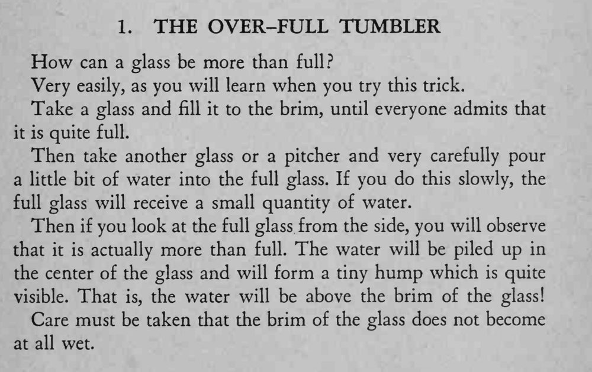

杯子已装到杯口齐平，魔术师又小心加进一点水，水面竟鼓出杯口边缘而不流下来。
杯口千万不能沾湿，水要沿杯壁缓缓加入，水面才鼓得起来。

How can a glass be more than full? Very easily, as you will learn when you try this trick. Take a glass and fill it to the brim, until everyone admits that it is quite full. Then take another glass or a pitcher and very carefully pour a little bit of water into the full glass. If you do this slowly, the full glass will receive a small quantity of water. Then if you look at the full glass from the side, you will observe that it is actually more than full. The water will be piled up in the center of the glass and will form a tiny hump which is quite visible. That is, the water will be above the brim of the glass! Care must be taken that the brim of the glass does not become at all wet.